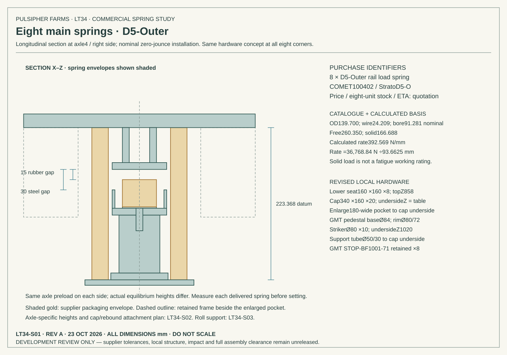
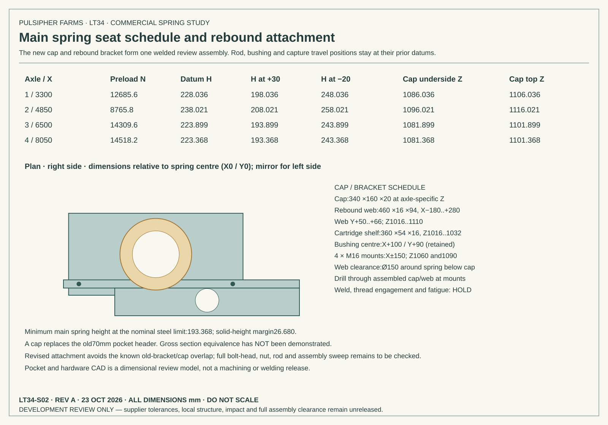
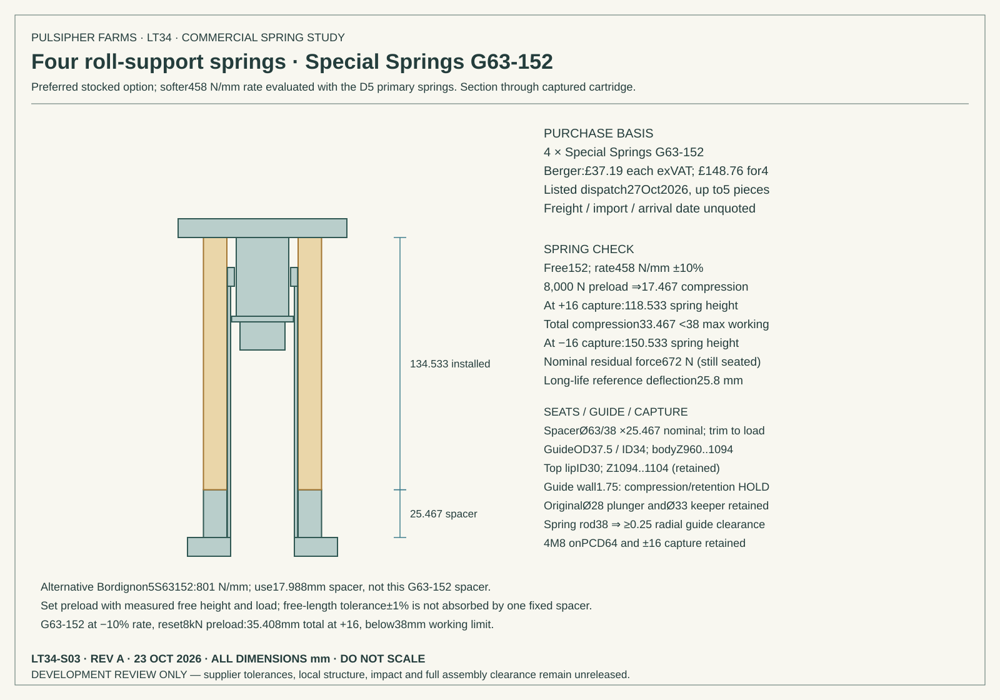

CURRENT SPRING DECISION · LT35
D5 replacement, supplier requests and corrected contact checks → D5 requires excessive frame adaptation and is no longer the preferred installation. Shorter standard alternatives requested; quotation and accepted installation remain open.
LT34 · COMMERCIAL SPRING INSTALLATION STUDY
Standard springs, with the seats revised to match
Eight D5-Outer rail springs and four Special Springs G63-152 roll springs are the development pairing. The main spring rate is1.8% below the trial rate. The softer roll spring remains within the nominal load-case travel and catalog working-deflection limits.
Part numbers and review drawings are available; purchasing is not yet complete. Main springs have no confirmed price, eight-unit stock or lead time. Tight bore clearance, tilted stop contact and the revised pocket structure remain engineering holds. LT33 remains the integrated assembly view; these LT34 drawings and mass-updated calculations are a separate study.
Supplier options
| Use / quantity | Specific part | Price | Availability / decision |
|---|---|---|---|
| Main development candidate ×8 | D5-Outer / COMET100402 / StratoD5-O | Quote required Quote required | Catalogue listed new; quantity8 stock and lead time unconfirmed |
| Preferred roll candidate ×4 | Special Springs G63-152 | GBP37.19 exVAT GBP148.76 exVAT | Berger lists up to5 for dispatch27Oct2026; overseas freight/transit unquoted |
| Roll alternative ×4 | Bordignon5S63152 / BD-5S63152 | [price removed] [price removed] | Freer Tool stock0; backorder ETA requires quote |
| Rejected main direct substitute ×8 | Eibach0950.550.1300 | [price removed] [price removed] | OEM limited stock; quantity8 and delivery unconfirmed; normal heavy pulling reaches steel backup |
Checked23October2026 UTC (22October local). Prices exclude shipping and applicable taxes. Dispatch is not delivery. Historical sourcing snapshot. LT35 records the subsequent supplier requests; no order has been placed.
Matching installation drawing
Download three-sheet installation review PDF · Download review CAD ZIP (seats, pockets, brackets and spring envelopes)



Loaded heights and full compression
Datum height sets the old preload at zero jounce. The actual level-loaded heights below come from the mass-updated nominal equilibrium solution; left/right differ with the inherited mass distribution.
| Axle | Datum height mm | Level-loaded left / right mm | At +30mm mm | Margin to solid mm |
|---|---|---|---|---|
| 1 | 228.036 | 229.195 / 231.244 | 198.036 | 31.348 |
| 2 | 238.021 | 239.163 / 241.211 | 208.021 | 41.333 |
| 3 | 223.899 | 216.150 / 218.201 | 193.899 | 27.211 |
| 4 | 223.368 | 215.619 / 217.670 | 193.368 | 26.680 |
Roll spring:134.533mm datum height;118.533mm at full +16mm capture. Total compression33.467mm is below the38mm catalog working limit. Nominal analyzed maximum compression is21.90mm, below the25.8mm long-life reference. Catalog die-spring life is not proof of locomotive fatigue life.
Mass-updated suspension comparison
| Case set | Solved | Minimum wheel N | Peak main N | Peak roll N | Roll travel mm | Steel backup N |
|---|---|---|---|---|---|---|
| nominal | 504/504 | 2169 | 26099 | 10034 | 4.44 | 0 |
| soft-bumper | 504/504 | 2150 | 26295 | 9997 | 4.36 | 892 |
| stiff-bumper | 504/504 | 2184 | 25744 | 10067 | 4.51 | 0 |
| soft-springs | 504/504 | 2396 | 23666 | 9392 | 5.32 | 4083 |
| stiff-springs | 504/504 | 1943 | 27498 | 10754 | 3.88 | 0 |
Nominal locomotive mass16,808.64kg; change-1.22kg from LT33. The ledger replaces spring, seat, pocket, guide and rebound-bracket hardware. Roll spring mass is an estimate1.7kg each, bounded0.8–2.37kg. D5 mass uses Strato19.9lb. Five sets of504 quasi-static cases give2,520 comparisons. The two spring sensitivity sets vary both spring rates±10% with the fixed drawing seats, so preload also changes; this is an assumed D5 sensitivity, not a certified D5 tolerance. GMT curve varies±20%. This is not a dynamic derailment or operating assessment.
Clearance findings and remaining holds
| Check | Result | Meaning |
|---|---|---|
| Main coil bind | 26.68mm minimum sampled nominal-geometry margin | No coil bind in the modeled geometry; verify certified solid height and end form. |
| GMT pedestal / coil bore | 0.99mm minimum nominal sampled radial gap | Tight. Straight bore screen only; not a helical-wire, tolerance or bowed-coil clearance approval. |
| Steel rim / striker | -0.54mm worst finite-edge gap | Negative means the tilted edge contacts before the solver centre-plane stop. Must resolve before release. |
| Raised cap / main rail | 10.71mm minimum vertical screen | Positive for sampled cap corners; other brackets, bolt heads, services and full swept assembly not verified. |
| Roll guide | 37.5mm OD /34mm ID; ≥0.25mm nominal radial spring clearance | 1.75mm wall and inherited keeper/attachment require strength, buckling and wear review. |
| Rubber expansion | 70mm reserved diameter inside72mm cup | Design reservation only; GMT has not confirmed loaded bulge. |
The soft spring sensitivity reaches steel backup in heavy pulling as well as fault cases. The supplier must confirm the actual working rate and load tolerance; delivered springs need measured preload setting. This candidate is not a confirmed drop-in or fabrication release. The old rebound mount locations conflict with the taller pockets; the drawing relocates fourM16 mounts per corner to axleX±150 and incorporates their bracket into the new cap assembly. Strength and the full moving assembly still need checking.
Next procurement milestone
Obtain a quote for eight new D5-Outer springs (COMET100402 or StratoD5-O), including price, stock, dispatch date, certified drawing, minimum bore through working travel, free/solid-height tolerances, measured operating rate and fatigue/application limits. Confirm the four G63-152 units and landed delivery. Use those certified dimensions to close the bore, tilted-stop and pocket-structure holds before issuing a fabrication drawing.
Evidence and reproducible results
COMET · Strato · Wabtec manual · Berger · Special Springs · Bordignon · Freer Tool · Eibach
Sourcing CSV · Calculation summary
Wabtec/Standard Car Truck manual, revision7/23, page3-B-2 supplies D5 dimensions and solid capacity. Rate392.569N/mm is calculated from those values. Supplier pages establish part identifiers; neither price nor availability has been inferred.